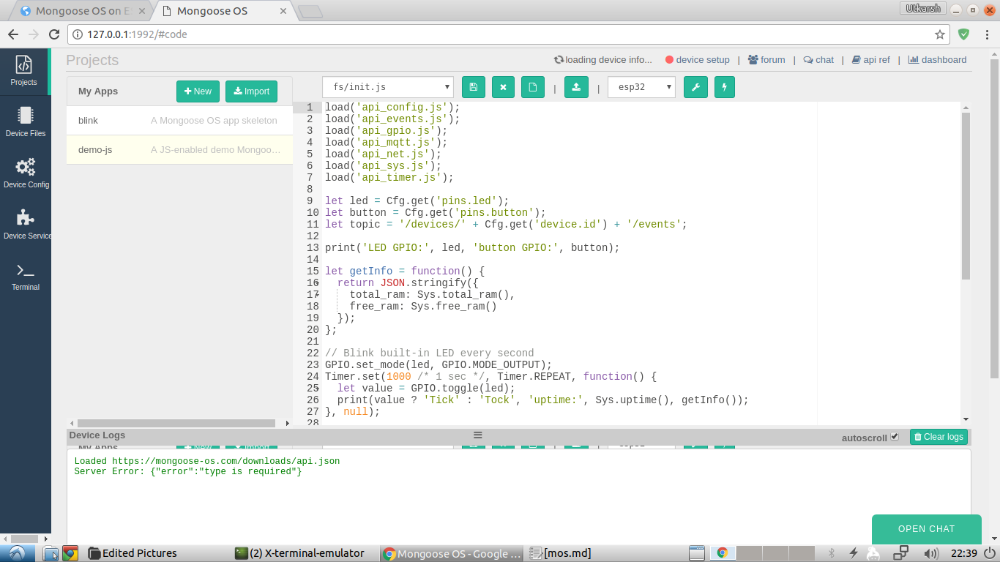

Recently I’ve got my hands on the craved-for IoT ESP32, thanks to DFRobot, and have been tinkering with it ever since. I’m really amazed by it since it packs both Bluetooth and WiFi in a small yet powerful unit. Since I received the MCU rather than the module, so, to use it, I made myself a breakout board named ESPer(because, why not? 😄). Feel free to check out its Instructions over here.
So, coming back on track, this post is dedicated on how to use it efficiently via Mongoose OS, which in my opinion, is a great firmware to start with for ESP32 beginners, such as me. It provides a good interface for creating, modifying and uploading code. I think it’s biggest feature is that it allows code modification over the air(OTA) so that you don’t have to flash your device for every small modification.
Speaking of code, it also supports a variety of languages, including C++, JavaScript and guess what, Wiring(Arduino). I think that’s enough of decribing what Mongoose OS is.
If you’re more curious about Mongoose OS, check out it’s official site: Mongoose OS.
Prepping and Beginning!
To flash your ESPer with Mongoose OS, you’re supposed to have the following things at bay:
- ESPer or ESP32 MCU.
This method will also work if your ESP32 is wired according to the ESPer schematic here. The ESP32 chip I used!
{kind=link}
- Arduino(any model) or a USB to TTL Converter
- 5 - Jumper Wires
- 2 - Breadboards (since ESPer doesn’t fit on one)
That’s all for the requirements. Once you’re sure you’ve got all the stuff, boost ahead!
Installing the mos Tool
 The Mongoose OS website provides an easy-to-use tool for flashing and managing Mongoose OS on devices. This tool also aids in uploading code and in numerous other tasks.
The installation instructions have been documented on the official website here. Since I’m using Lubuntu myself, I had to use the following commands:
|
|
Wiring up ESPer
 Once the tool is downloaded, wire up your ESPer with any USB to TTL Converter
since the flashing is to be done via UART.
Once the tool is downloaded, wire up your ESPer with any USB to TTL Converter
since the flashing is to be done via UART.
To keep things applicable to a larger reader-base, I’ll be proceeding with my good ‘ol Arduino UNO. It’s possible to use an Arduino as a USB to TTL Converter since it has an in-built CH340G Converter which the Arduino uses for programming the ATmega IC. Now wire up ESPer according to the wiring diagram posted above. Once done it should look something like this.

Be careful while making the power connections because ESP32 MCU is not 5V tolerable therefore you might end up burning your MCU if you’re not careful.
Once that’s done, connect your Arduino to your PC or any other device.
Flashing the Firmware
Now that everything’s done, all that’s left to do is to flash the firmware onto the ESPer board. To do that:
- Launch the mos tool. In my case, that is Linux, it is opened by entering
mosin the terminal. This will open up the mos Web UI in your web browser.
- In the UI, set the Arduino Serial Port, device as esp32 and an app of
your choice. Then click on
Flash.
- After a few moments, the UI will attempt to connect to the device. In this interval, you’ll have to get off from your keyboard to the ESPer board. To connect the device to the UI, we’ll have to make it enter Download Mode. This is done by pressing and holding the Boot button, and then the Reset button. After a second, release the Reset button first and then the Boot button. You’ll see that the UI will have begun the flashing process by then.
- Once the message “All done” pops up in the console. Close the web browser and
terminate the
moscommand by pressingCtrl+Cin the terminal.
This concludes the flashing process.
Configuring the WiFi Settings
 So we have flashed the Mongoose OS firmware in our ESPer board now, but we still
haven’t configured the WiFi Settings which is the most important feature of
IoT devices since they have to be connected to the internet. To configure WiFi:
So we have flashed the Mongoose OS firmware in our ESPer board now, but we still
haven’t configured the WiFi Settings which is the most important feature of
IoT devices since they have to be connected to the internet. To configure WiFi:
- Press the Reset button on the ESPer board. Wait for a minute or so to let the MCU boot up.
- Launch the mos tool again and select your Arduino Serial Port. You’ll notice that the UI automatically detects that the Mongoose OS firmware is installed on the device and asks you to enter the WiFi settings.
- Enter the WiFi settings and that’s it.
The Sky’s the Limit
Now that you’ve installed an OS on your ESPer board or ESP32, you can do almost anything with it, be it a mini Arduino or a WiFi server, you name it. So go ahead and start coding and making. The video below shows my ESPer flashed with the Blink Code.
The video was recorded before this post was published that is why there is no silkscreen on the ESPer board.
So that’s how you install Mongoose OS on your ESPer board. You may refer to the official documentation to get acquainted with the UI and use it effectively in your projects. This is the link: Mongoose OS Documentation
If you feel that I missed something, please use the Disqus Comments below to let me know. Same goes for the improvement suggestions.
A huge thanks to DFRobot for sending me awesome stuff.
Thanks for reading! 😀
Keep Making!